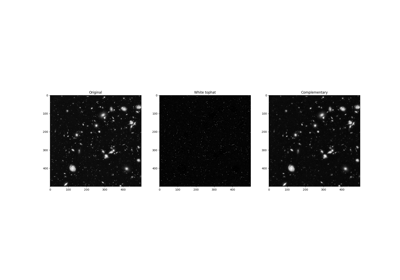
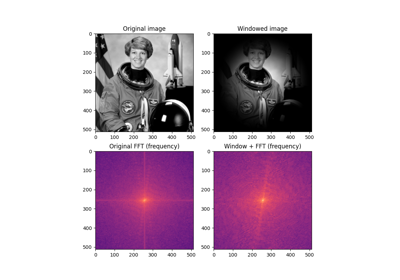
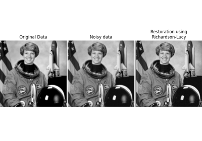
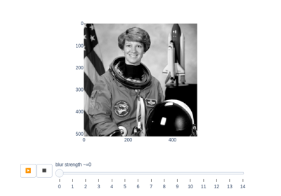
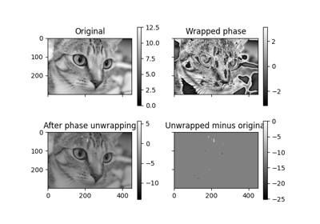

Source
SourceFiltering and restoration¶

Removing small objects in grayscale images with a top hat filter
Removing small objects in grayscale images with a top hat filter
Hysteresis thresholding


Using window functions with images
Using window functions with images
Unsharp masking

Image Deconvolution

Estimate strength of blur
Entropy
Calibrating Denoisers Using J-Invariance
Calibrating Denoisers Using J-Invariance
Inpainting
Band-pass filtering by Difference of Gaussians
Band-pass filtering by Difference of Gaussians
Denoising a picture
Shift-invariant wavelet denoising
Shift-invariant wavelet denoising

Phase Unwrapping
Non-local means denoising for preserving textures
Non-local means denoising for preserving textures
Attribute operators
Wavelet denoising
Butterworth Filters
Full tutorial on calibrating Denoisers Using J-Invariance
Full tutorial on calibrating Denoisers Using J-Invariance